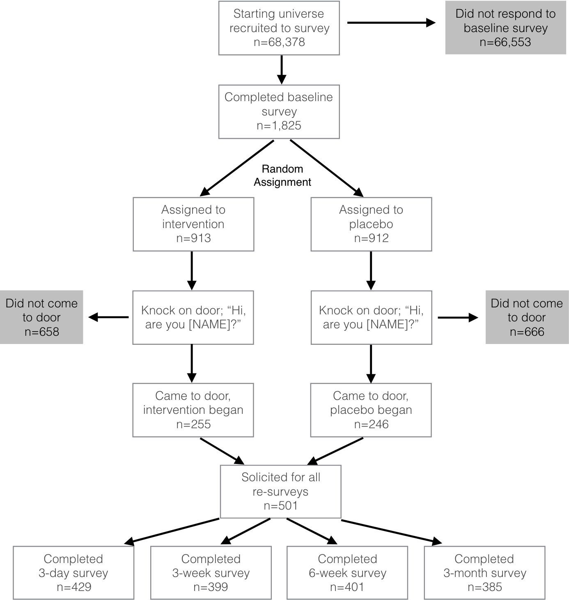
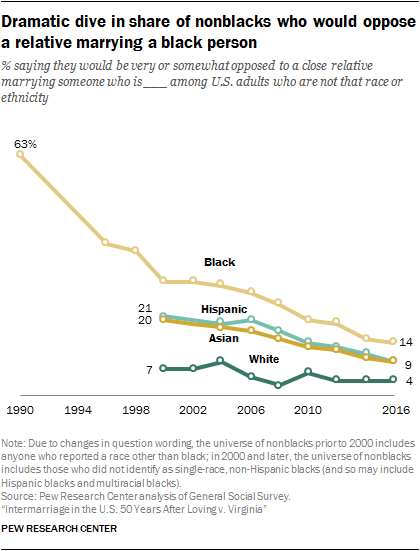
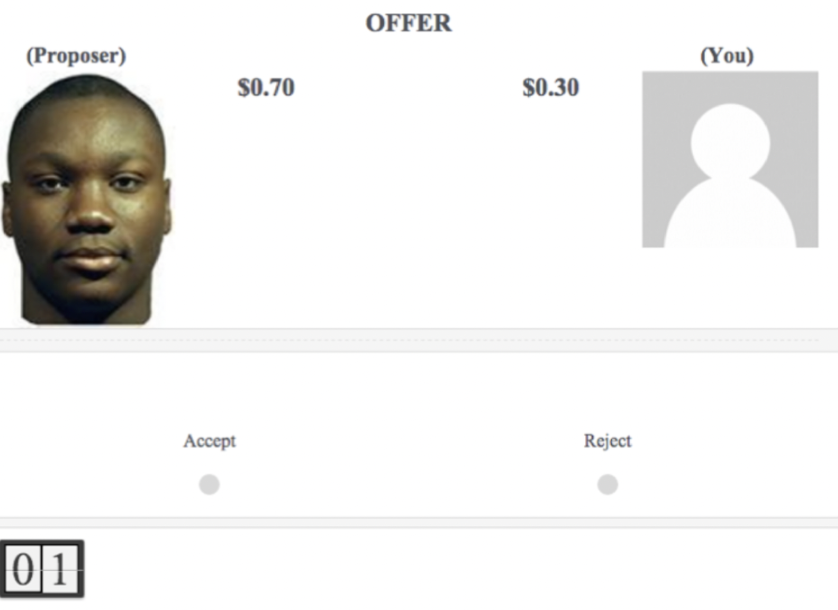

Lecture 7
March 7, 2024
Examines the effect of “deep canvassing” on attitudes
Panel design
Outcome: survey measures of attitudes

Primary outcome: a battery of survey measures designed to measure transgender stigma:
Miami-Dade county recently passed a law that prohibits discrimination in housing, employment and public accommodations based on gender identity and expression, a category that includes transgender men and women. Do you favor or oppose this new law?
Some people say it’s important to protect transgender people from discrimination in housing and employment. Other people have concerns about society becoming too accepting of transgender people, and do not want transgender people included in our non-discrimination law. What do you think? Do you agree or disagree that Miami law should protect transgender people from discrimination?
Using a scale from zero to 100, please tell us your personal feelings toward each of the following groups. As you do this task, think of an imaginary thermometer. The warmer or more favorable you feel toward the group, the higher the number you should give it. The colder or less favorable you feel, the lower the number. If you feel neither warm nor cold toward the group, rate it 50.
A man who identifies as a woman is psychologically abnormal
It is morally wrong for a man to present himself as a woman in public
Saying you are a gender that is different than the one you were born with is morally wrong
I would support a friend choosing to have a sex change
As we registered in a preanalysis plan before conducting the 6-week survey, we suspected that many placebo group subjects did not know what the term “transgender” meant (potentially being more familiar with other, derogatory terms for this group), making them unable to connect any antitransgender attitudes with this question about the law.
We therefore included a definition of the term “transgender” in the survey questions about the law, starting with the 6-week survey, clearly defining the term and highlighting transgender people’s inclusion in the law.
Broockman and Kalla combine these measures into indices.
Why combine multiple measures instead of looking at individual measures?
Use dimension reduction techniques to combine measures into indices.
Why not combine?
Measurement error can be due to many types of biases:
Important to consider these biases when designing and analyzing surveys
Need to pretest survey questions and carefully analyze response patterns

We are often interested in sensitive topics, such as racial attitudes, sexual behavior, or political preferences
Respondents may answer questions in a way to avoid embarrassment or to appear more favorable to the interviewer
Structural features of surveys can reduce social desirability bias
Do you agree strongly, somewhat, neither agree, nor disagree, somewhat disagree, or strongly disagree with the following statement?
IAT Link
Ultimatum Game:
On your screen, you will see a virtual dice. Click on it to roll the dice. If the number on the dice is 1, 2, 3, or 4, please respond whether Statement A is true or false for you. Otherwise, please respond whether Statement B is true or false for you. Only you can see the number on the dice.
A I have used an illegal drug in the past month.
B I have not used an illegal drug in the past month.
TRUE or FALSE
Randomized response techniques can be used to reduce social desirability bias
Respondents are asked to answer a question based on a random device
The random device is used to determine whether the respondent answers the question truthfully or not
The researcher can then estimate the true proportion of respondents who answer “yes” to a sensitive question
Can reduce social desirability bias, but can be difficult to implement and introduces random noise (reducing precision)
Here is a list of four things that some people have done and some people have not. Please listen to them and then tell me HOW MANY of them you have done in the past two years. Do not tell me which you have and have not done. Just tell me how many:
– Discussed politics with family or friends;
– Cast a ballot for Governor Phil Bryant;
– Paid dues to a union;
– Given money to a Tea Party candidate or organization.
– Voted ‘YES’ on the ‘Personhood’ Initiative on the November 2011 Mississippi
Social Desirability Bias